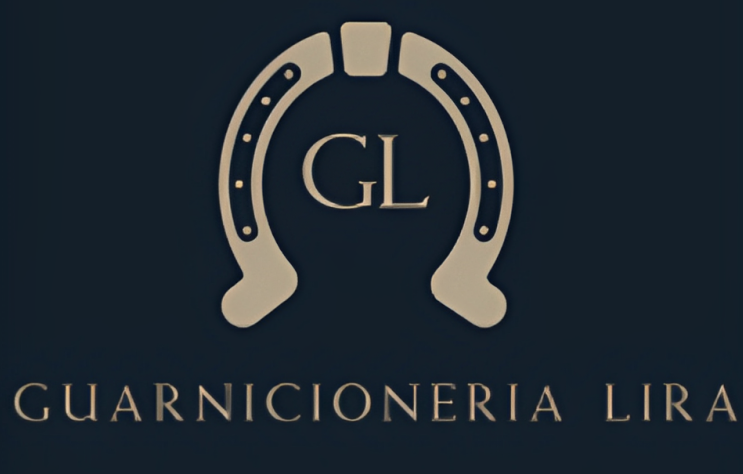
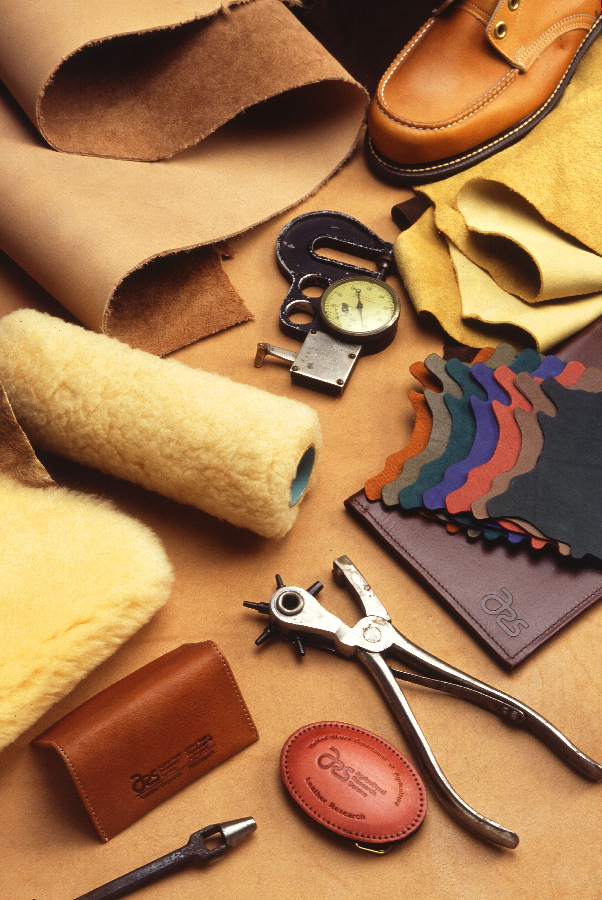

Guarnicionería Lira es una empresa familiar de maestros artesanos especializados en guarnicionería de caballos y jinetes. En nuestra tienda-taller, localizada en el centro histórico de Sevilla, fabricamos a mano artículos para el caballo y complementos de moda para el jinete. Todos nuestros artículos son elaborados de forma artesana, utilizando para ello diferentes pieles y cuero de máxima calidad.

Pieles
Las pieles que utilizamos en Guarnicionería Lira son pieles nacionales de origen animal y curtidas al vegetal. Estas pieles reciben un tratamiento más sostenible con el medio ambiente y no plantean riesgos para la salud de nuestros clientes.
Este tipo de curtición se lleva a cabo en barricas de madera donde se introducen las pieles junto con los taninos, sustancias orgánicas extraídas de árboles como el roble o el castaño.
Los taninos le aportan a la piel mayor resistencia, evitando así su descomposición. Por otro lado, la curtición de la piel con taninos hace que esta se vuelva más duradera en el tiempo, además de aportar mayor intensidad y colores más llamativos a la piel.

Tecnicas
En Guarnicionería Lira seguimos apostando por la artesanía y como prueba de ello, nuestra forma de trabajar las diferentes pieles y el cuero sigue siendo a mano.
Entre las técnicas que más utilizamos durante la confección de nuestros artículos se encuentra el cosido guarnicionero, para el cual utilizamos hilo de lino encerado.
El calado y troquelado son otras de las técnicas utilizadas en el diseño de nuestros artículos ya que nos permiten combinar pieles de múltiples colores, diseñando así diferentes estampados o transparencias.